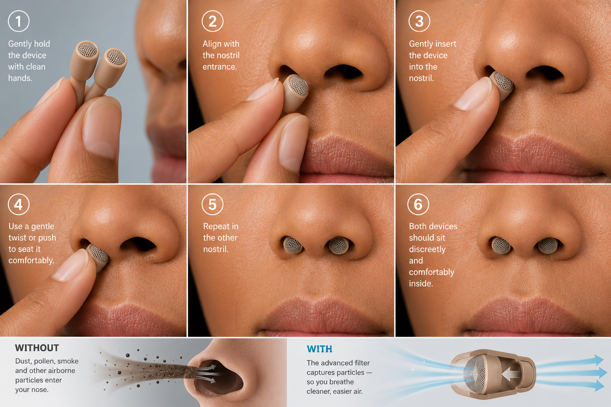

Personal respiratory protection
The air down here isn't clean.
Now you don't have to breathe it.
Numa is a discreet nasal device that filters the air you breathe on your commute. Built first for people with asthma and allergies — and for anyone who'd rather not inhale the subway. No mask, no effort. Like earbuds, for your nose.
The invisible commute
When the train's headlights cut through the tunnel, you see it: a fog of suspended particles. You've been breathing it the whole time.
Subway air is loaded with fine particulate matter — brake dust, rail wear, and debris — at levels that dwarf the air above ground. It's invisible, it's chronic, and right now most commuters just live with it.
This isn't ordinary city dust. Subway PM2.5 is chemically distinct — high in iron oxide from brake and rail wear, plus elemental carbon — raising concerns beyond standard particulate exposure. And transit ventilation is "often inefficient" at removing it, which is exactly why personal protection matters.
Luglio et al., Environmental Health Perspectives 2021 (NYU Langone) · Env. Science: Processes & Impacts, review of 130+ studies, 2021
The job to be done — and why today's options fail
The job: protect my lungs on the commute I take anyway — without a mask, without effort, without anyone noticing. That's the gap Numa fills.
How it works
Designed to disappear.
Masks fell out of favor for a reason — nobody wants to wear one every day. Numa sits inside the nose, out of sight, and does its work while you forget it's there.
Breathe naturally
Engineered for low airflow resistance, so a 30–60 minute commute feels effortless — not like breathing through a straw.
Practically invisible
A discreet in-nose insert, not a face mask. Socially weightless — wear it on a packed platform, nobody notices.
Layered protection
Multiple filter layers capture coarse debris, fine PM2.5, and odor — then pop out and swap when spent.
The whole device — tap a part
Shell on the outside. A replaceable filter cartridge inside.
The product
Built for every nose. Worn like it isn't there.
No two noses are alike — so the part that touches you is soft, sized, and engineered around the pressure points. Everything hard stays off your skin.
Skin-safe where it counts. Built to last where it doesn't.
Designed around where it touches — and where it doesn't.
- No septum contact. The sensitive center divider is left untouched.
- Even pressure spread across the nostril wall — no single hot spot to ache.
- Vented for moisture so a long commute doesn't dry you out.
- Stays seated when you talk, sneeze, or hustle for the train.
Putting it on
In your nose in seconds. Out of sight all day.
A gentle insert into each nostril and you're done — discreet, comfortable, and quietly filtering every breath. Here's the whole routine, and what it's doing while you wear it.

Fitting guide · both nostrils · the filter captures particles so you breathe cleaner air
Filters & refills
One device. Fresh filters, forever.
You buy the device once. The protection lives in the filter — and filters are spent media, like a water pitcher cartridge. Refill kits ship to your door on a cadence that matches how hard you commute.
Estimated subscription based on a filter's effective capacity at your exposure. Pause, skip, or cancel anytime — and the device is yours to keep.
Never guess
You'll always know when a filter is spent.
A visible indicator tracks filter life against your real exposure — no math, no surprises. When it reads empty, the next kit is already on its way.
≈ 9 days of protection left
at your commute profile.
Like what you see? It's free to reserve.
No product yet, no payment today — just tell us you'd want one. That's the signal that gets it built.
The tiered exposure model
Protection that matches your exposure.
Most filters are sold as one undifferentiated commodity. Numa is built around your exposure profile — how long you've been breathing this air, and how long you'll keep doing it. The longer the exposure, the more protection earns its place.
Not sure which? Most people start at Resident. You can move up a tier anytime — the device and app carry over.
Light, simple, ready out of the box.
For tourists and short-stay visitors. Basic, effective filtration in a lightweight body — protection for the weeks you're here.
Planned founding pricing · locked in for early reservations · final pricing confirmed before launch
Tier 4 · Companion app
Know exactly what you're breathing.
The top tier adds in-device air-quality sensing that pairs with your phone — turning an invisible, distant risk into something you can actually see and act on.
- Live PM2.5 on your line, station by station.
- Exposure tracking — cumulative particles filtered, day over day.
- Filter life synced to your real commute, with refills timed automatically.
CONCEPT PREVIEW — SENSING + APP ARE THE TIER 4 ROADMAP
The evidence
Not a hunch. A documented health problem.
Peer-reviewed research from credible institutions confirms subway air quality is a real, measurable public-health concern — not an anecdote.
Mean PM2.5 measured on NYC subway platforms — versus 99 on trains. Roughly 9× the WHO daily limit.
PM2.5 in London & Stockholm subways runs about ten times higher than the ambient air above ground.
Long-distance commuters are 25% of riders but bear 40% of the total health burden — exposure compounds with time.
Questions, answered
Everything you're probably wondering.
Does it make breathing harder?
What if I breathe through my mouth?
Will it fall out when I talk, sneeze, or run for the train?
Is it comfortable for a full commute?
How do I keep it clean, and how often do I replace the filter?
Is it safe? What's it made of?
Does it actually help with asthma or allergies?
There's no product yet — so what am I paying?
Pre-order · Founding run
Be first. And help decide if this gets built.
No product exists yet — your reservation is the signal that tells us to build it. It takes ten seconds, costs $0 today, and there's no card. Hit our number and you get the first units off the line at founding-member pricing.
$0 TODAY · NO CARD · UNSUBSCRIBE ANYTIME · WE NEVER SELL YOUR DATA